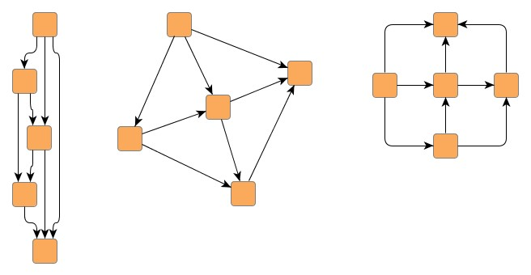

| Class ComponentLayouter | ||
|---|---|---|
| Prev | Chapter 5. Automatic Graph Layout | Next |
Class ComponentLayouter provides
services for arranging the
connected components of a graph.
When invoked, it calls its core layouter on each of the input graph's
components.
After the core layouter has successively performed its layout processes,
ComponentLayouter regains control and arranges the separate components.
provides
services for arranging the
connected components of a graph.
When invoked, it calls its core layouter on each of the input graph's
components.
After the core layouter has successively performed its layout processes,
ComponentLayouter regains control and arranges the separate components.
Using ComponentLayouter's services with a given Layouter implementation as its core layouter, has several benefits:
Class ComponentLayouter knows a number of data provider keys which are used to retrieve supplemental layout data for a graph's elements. The data is bound to the graph by means of a data provider, which is registered using a given look-up key. Table 5.20, “Data provider look-up keys” lists all look-up keys for ComponentLayouter.
Binding supplemental layout data to a graph is described in the section called “Providing Supplemental Layout Data”.
Table 5.20. Data provider look-up keys
| Key | Element Type | Value Type | Description |
|---|---|---|---|
| LAYOUT_NODE_DPKEY |
Node | boolean | For each node a boolean value indicating whether it should be layouted or not. |
| GIVEN_COMPONENT_ID_DPKEY |
Node | Object | For each node an arbitrary Object indicating the component it is affiliated with. |
| NODE_HALO_DPKEY |
Node | NodeHalo |
A NodeHalo |
| ABORT_HANDLER_DPKEY |
Graph | AbortHandler |
An AbortHandler |
Class ComponentLayouter provides a set of options that affect its behavior.
| Component Arrangement Style | |
| API | void setStyle(byte style) |
| Description | Specifies the style for arranging the components of a graph. |
The component arrangement style can be set as follows:
Example 5.20. Setting a component arrangement style
// 'graph' is of type y.layout.LayoutGraph. SmartOrganicLayouter sol = new SmartOrganicLayouter(); ComponentLayouter cl = (ComponentLayouter)sol.getComponentLayouter(); // Set another arrangement style instead of the default // ComponentLayouter.STYLE_ROWS. cl.setStyle(ComponentLayouter.STYLE_PACKED_COMPACT_RECTANGLE); // Buffered layout with component arrangement. new BufferedLayouter(sol).doLayout(graph);
| Arranging Components | |
| API | void setComponentArrangementEnabled(boolean enabled) |
| Description | Determines whether the separate components should be arranged or not. By default, component arrangement is enabled. |
| Component Spacing | |
| API | void setComponentSpacing(double spacing) |
| Description | Defines the minimum distance between the bounding boxes of adjacent components. |
| Grid Spacing | |
| API | void setGridSpacing(double spacing) |
| Description | Defines the spacing of the grid on which the separate components are placed. |
| Label Awareness | |
| API | void setLabelAwarenessEnabled(boolean enabled) |
| Description | Determines whether node and edge labels are taken into account when computing the bounding boxes of components. |
| Preferred Layout Size | |
| API | void setPreferredLayoutSize(double width, double height) |
| Description | Defines the preferred size of the layout. |
| Support for Grouped Graphs | |
| API | void setGroupingActive(boolean enabled) |
| Description | Specifies whether the grouped graph's hierarchy of nodes is taken into account when determining its components. |
In addition to these options, ComponentLayouter by default also supports node halos
as soon as they are declared using the data provider key NODE_HALO_DPKEY .
.
Class ComponentLayouter offers the possibility to call the core layouter only on a subset of the graph's components, effectively excluding the coset of components from layout calculation. This technique is presented in Example 5.21, “Excluding components from layout calculation”.
Example 5.21. Excluding components from layout calculation
// 'graph' is of type y.layout.LayoutGraph.
NodeList[] components = GraphConnectivity.connectedComponents(graph);
// Create a node map that will be used as a data provider to hold boolean
// values indicating whether a component should be considered for layout
// calculation.
NodeMap nm = graph.createNodeMap();
// Every second component of the graph is marked so that a layout is calculated
// for it. The other components, while being arranged nevertheless, are not
// considered for layout calculation.
for (int i = 0; i < components.length; i += 2) {
nm.setBool(components[i].firstNode(), true);
}
// Register the node map with the graph using the special look-up key defined
// by class ComponentLayouter.
graph.addDataProvider(ComponentLayouter.LAYOUT_NODE_DPKEY, nm);
// The default ComponentLayouter stage of SmartOrganicLayouter arranges all
// components.
new BufferedLayouter(new SmartOrganicLayouter()).doLayout(graph);
// Remove the data provider from the graph.
graph.removeDataProvider(nm);
Figure 5.12, “Using ComponentLayouter in conjunction with LayoutMultiplexer” presents the resulting layout when different
layout algorithms are invoked for the separate components of a graph using
ComponentLayouter in conjunction with class
LayoutMultiplexer as outlined in
Example 5.22, “Using different layout algorithms for components”.
Each of the three components shows another layout style: hierarchical, organic,
and orthogonal layout (from left to right).
Arrangement of the components in a row has been done by ComponentLayouter.
as outlined in
Example 5.22, “Using different layout algorithms for components”.
Each of the three components shows another layout style: hierarchical, organic,
and orthogonal layout (from left to right).
Arrangement of the components in a row has been done by ComponentLayouter.
Figure 5.12. Using ComponentLayouter in conjunction with LayoutMultiplexer
|

|
| A single graph that has three separate components, each showing another layout style. |
Example 5.22. Using different layout algorithms for components
// 'graph' is of type y.layout.LayoutGraph.
NodeList[] components = GraphConnectivity.connectedComponents(graph);
// Create a node map that will be used as a data provider to hold a Layouter
// implementation for each of the components. This layouter will be used for
// layout calculation.
NodeMap nm = graph.createNodeMap();
// Register the node map with the graph using the special look-up key defined
// by class LayoutMultiplexer.
graph.addDataProvider(LayoutMultiplexer.LAYOUTER_DPKEY, nm);
// For each component one of the layouters is set. (Actually, a layouter is set
// for the component's first node only. Nevertheless, this layouter is used for
// the entire component, since LayoutMultiplexer takes the first non-null
// Layouter it can retrieve from the data provider.)
Layouter[] coreLayouter = { new IncrementalHierarchicLayouter(),
new SmartOrganicLayouter(),
new OrthogonalLayouter() };
for (int i = 0; i < components.length; i++) {
nm.set(components[i].firstNode(), coreLayouter[i % 3]);
}
// ComponentLayouter uses LayoutMultiplexer as its core layouter, which, for
// each component, invokes the layouter retrieved from the data provider
// registered with the graph.
// Afterwards, the ComponentLayouter nicely arranges the components.
ComponentLayouter cl = new ComponentLayouter();
cl.setCoreLayouter(new LayoutMultiplexer());
new BufferedLayouter(cl).doLayout(graph);
// Remove the data provider from the graph.
graph.removeDataProvider(nm);
|
Copyright ©2004-2015, yWorks GmbH. All rights reserved. |